<title>The Thurman Place</title>
<link rel="preconnect" href="https://fonts.googleapis.com">
<link rel="preconnect" href="https://fonts.gstatic.com" crossorigin>
<link rel="stylesheet" href="https://fonts.googleapis.com/css2?family=Barlow+Condensed:wght@500;600;700&family=Barlow:wght@400;500;600&family=Newsreader:ital,opsz,wght@0,6..72,400;0,6..72,500;1,6..72,400&display=swap">
<link rel="stylesheet" href="styles.css">

<header class="nav">
  <div class="wrap">
    <a class="wordmark" href="#top">The Thurman <span>Place</span></a>
    <nav aria-label="Chapters">
      <ul>
        <li><a href="#land">The Land</a></li>
        <li><a href="#pond">The Pond</a></li>
        <li><a href="#house">The House</a></li>
        <li><a href="#hands">The Hands</a></li>
        <li><a href="#eldridge">Eldridge</a></li>
        <li><a href="#memories">Memories</a></li>
        <li><a href="gallery.html">Gallery</a></li>
      </ul>
    </nav>
  </div>
</header>

<main id="top">

  <!-- ============ HERO ============ -->
  <section class="hero" aria-label="The Thurman Place">
    <video class="hero__img" id="hero-video" src="video/hero.mp4" poster="images/field-hay-bales.jpg" autoplay muted loop playsinline preload="auto" aria-hidden="true"></video>
    <noscript>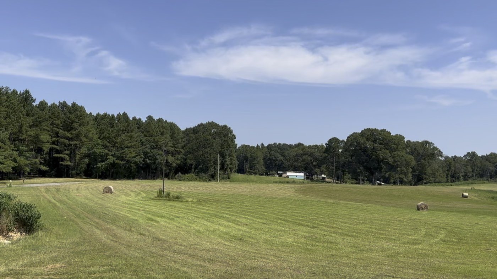</noscript>
    <div class="hero__shade" aria-hidden="true"></div>
    <div class="hero__text">
      <div class="wrap">
        <p class="eyebrow">Magee, Mississippi &middot; Thirty-three acres</p>
        <h1><span class="w">The</span> <span class="w">Thurman</span> <span class="w">Place</span></h1>
        <p class="hero__dek">Thirty-three acres outside Magee, Mississippi. A pond full of catfish, and a house going up one weekend at a time. Eldridge Lee Thurman saw all of it before any of it was here. This is his vision, and the family that&rsquo;s building it together.</p>
      </div>
    </div>
  </section>

  <!-- ============ INTRO ============ -->
  <section class="intro">
    <div class="wrap intro__grid">
      <div class="prose">
        <p class="lede">Thirty-three acres, one family, and one man&rsquo;s picture of what it could be. Eldridge Lee Thurman drew the plan. His family is the one still building it, together.</p>
        <p>He passed away recently. The pond he dug is full. The first house he planned has its roof on and drywall going up inside. The fence line for the next homes is in the ground. This page is how we keep the whole picture in one place: the land, the work, the people doing it, and the man who started it.</p>
      </div>
      <dl class="facts">
        <div><dt>Where</dt><dd>Magee, Mississippi</dd></div>
        <div><dt>Land</dt><dd>33 acres</dd></div>
        <div><dt>Pond</dt><dd>1, full of catfish</dd></div>
        <div><dt>Homes</dt><dd>1 rising, more planned</dd></div>
        <div><dt>Ground broken</dt><dd>October 2022</dd></div>
        <div><dt>Latest work</dt><dd>Drywall, August 2026</dd></div>
        <div><dt>Built by</dt><dd>Family</dd></div>
      </dl>
    </div>
  </section>

  <!-- ============ THE LAND ============ -->
  <section class="chapter" id="land">
    <div class="wrap">
      <div class="chapter__head">
        <p class="eyebrow">Chapter one</p>
        <h2>The Land</h2>
        <p class="lede">Thirty-three acres in Simpson County, just outside Magee. The pond on the west side, the house on the east, open ground between, red clay underneath. Tap a spot on the map to see it.</p>
      </div>
      <div class="land">
        <div class="map">
          <svg viewBox="0 0 640 460" role="group" aria-label="Sketch map of the property, not to scale. Pond alone on the far west side, house on the east running north to south, homesites to come north and west of the house, fence line and oak along the south, planned tree barrier along the north.">
            <defs>
              <pattern id="grass" width="14" height="14" patternUnits="userSpaceOnUse" patternTransform="rotate(-8)">
                <rect width="14" height="14" fill="#D8B463" opacity="0.22"/>
                <line x1="0" y1="7" x2="14" y2="7" stroke="#B48A4E" stroke-width="1" opacity="0.4"/>
              </pattern>
              <pattern id="pines" width="22" height="22" patternUnits="userSpaceOnUse">
                <path d="M11 2 L18 16 L4 16 Z" fill="#2E4A3A" opacity="0.55"/>
                <rect x="10" y="16" width="2" height="4" fill="#2E4A3A" opacity="0.55"/>
              </pattern>
              <pattern id="pines-planned" width="30" height="22" patternUnits="userSpaceOnUse">
                <path d="M15 3 L21 16 L9 16 Z" fill="none" stroke="#2E4A3A" stroke-width="1.5" stroke-dasharray="3 2" opacity="0.7"/>
                <rect x="14" y="16" width="2" height="4" fill="#2E4A3A" opacity="0.5"/>
              </pattern>
            </defs>
            <!-- boundary -->
            <path d="M40 60 L600 48 L610 400 L60 416 Z" fill="url(#grass)" stroke="#6F6E60" stroke-width="2" stroke-dasharray="6 5"/>
            <!-- north edge: planned tree barrier -->
            <path d="M40 60 L600 48 L602 100 L44 112 Z" fill="url(#pines-planned)" stroke="#2E4A3A" stroke-width="1" stroke-dasharray="4 4" opacity="0.9"/>
            <text class="m-label" x="200" y="38">North edge &middot; tree barrier to be planted</text>
            <!-- compass -->
            <g transform="translate(608 26)">
              <line x1="0" y1="14" x2="0" y2="-2" stroke="#6F6E60" stroke-width="2"/>
              <path d="M-5 4 L0 -6 L5 4 Z" fill="#6F6E60"/>
              <text class="m-label" x="10" y="8">N</text>
            </g>
            <!-- road along the south -->
            <path d="M20 440 L640 428" stroke="#6F6E60" stroke-width="10" stroke-linecap="round" opacity="0.55"/>
            <path d="M20 440 L640 428" stroke="#F1EDE2" stroke-width="1.5" stroke-dasharray="10 12" opacity="0.9"/>
            <text class="m-note" x="24" y="458">road</text>
            <!-- pond, far west, on its own -->
            <path d="M56 214 C80 170 160 168 182 204 C204 240 184 288 150 298 C110 310 62 294 54 258 C50 240 50 226 56 214 Z" fill="#8A3D21" opacity="0.5"/>
            <path d="M66 222 C88 186 150 184 170 212 C190 240 174 276 146 286 C112 296 72 284 64 256 C60 242 62 232 66 222 Z" fill="#6C6A46"/>
            <!-- the first house, east side, long axis running north to south -->
            <rect x="522" y="252" width="36" height="122" fill="#E2C48D" stroke="#B48A4E" stroke-width="2"/>
            <rect x="522" y="234" width="36" height="18" fill="none" stroke="#B48A4E" stroke-width="2"/>
            <!-- homesites to come: north and west of the first house -->
            <rect x="290" y="150" width="88" height="54" fill="none" stroke="#B4512C" stroke-width="2" stroke-dasharray="5 5"/>
            <rect x="398" y="150" width="88" height="54" fill="none" stroke="#B4512C" stroke-width="2" stroke-dasharray="5 5"/>
            <rect x="506" y="150" width="70" height="54" fill="none" stroke="#B4512C" stroke-width="2" stroke-dasharray="5 5"/>
            <!-- fence line along the south -->
            <path d="M64 402 L604 392" stroke="#8A3D21" stroke-width="2"/>
            <g stroke="#8A3D21" stroke-width="2">
              <line x1="140" y1="394" x2="140" y2="408"/><line x1="220" y1="393" x2="220" y2="407"/><line x1="300" y1="392" x2="300" y2="406"/>
              <line x1="380" y1="390" x2="380" y2="404"/><line x1="460" y1="389" x2="460" y2="403"/><line x1="540" y1="387" x2="540" y2="401"/>
            </g>
            <!-- the big oak, south side -->
            <circle cx="240" cy="360" r="30" fill="#2E4A3A" opacity="0.75"/>
            <circle cx="240" cy="360" r="19" fill="#2E4A3A"/>
            <text class="m-note" x="392" y="128" text-anchor="start">Not to scale, drawn from memory.</text>

            <!-- hotspots -->
            <g class="hot" data-spot="pond" tabindex="0" role="button" aria-pressed="true" aria-label="The pond">
              <circle class="hit" cx="118" cy="236" r="26" fill="transparent"/><circle class="halo" cx="118" cy="236" r="14"/><circle class="dot" cx="118" cy="236" r="7"/>
              <text x="86" y="330">The Pond</text>
            </g>
            <g class="hot" data-spot="house" tabindex="0" role="button" aria-pressed="false" aria-label="The first house">
              <circle class="hit" cx="540" cy="300" r="26" fill="transparent"/><circle class="halo" cx="540" cy="300" r="14"/><circle class="dot" cx="540" cy="300" r="7"/>
              <text x="416" y="306">The First House</text>
            </g>
            <g class="hot" data-spot="oak" tabindex="0" role="button" aria-pressed="false" aria-label="The big oak">
              <circle class="hit" cx="240" cy="360" r="26" fill="transparent"/><circle class="halo" cx="240" cy="360" r="14"/><circle class="dot" cx="240" cy="360" r="7"/>
              <text x="278" y="366">The Big Oak</text>
            </g>
            <g class="hot" data-spot="field" tabindex="0" role="button" aria-pressed="false" aria-label="The open field">
              <circle class="hit" cx="330" cy="256" r="26" fill="transparent"/><circle class="halo" cx="330" cy="256" r="14"/><circle class="dot" cx="330" cy="256" r="7"/>
              <text x="346" y="262">The Field</text>
            </g>
            <g class="hot" data-spot="lots" tabindex="0" role="button" aria-pressed="false" aria-label="The homes to come">
              <circle class="hit" cx="398" cy="204" r="26" fill="transparent"/><circle class="halo" cx="398" cy="204" r="14"/><circle class="dot" cx="398" cy="204" r="7"/>
              <text x="414" y="226">Homes to Come</text>
            </g>
          </svg>
          <div class="map__legend" aria-label="Places on the map">
            <button type="button" data-spot="pond" aria-pressed="true">The Pond</button>
            <button type="button" data-spot="house" aria-pressed="false">The First House</button>
            <button type="button" data-spot="oak" aria-pressed="false">The Big Oak</button>
            <button type="button" data-spot="field" aria-pressed="false">The Field</button>
            <button type="button" data-spot="lots" aria-pressed="false">Homes to Come</button>
          </div>
        </div>
        <div class="map__panel" aria-live="polite">
          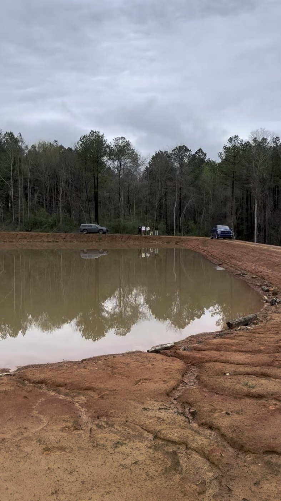
          <h3 id="map-title">The Pond</h3>
          <p id="map-text">Dug into red clay at the tree line, and the first thing Eldridge finished. It filled with rain, then with catfish, and it&rsquo;s where the family still gathers first when they come out.</p>
        </div>
      </div>
    </div>
  </section>

  <!-- ============ THE POND ============ -->
  <section class="chapter chapter--clay" id="pond">
    <div class="wrap">
      <div class="chapter__head">
        <p class="eyebrow">Chapter two</p>
        <h2>The Pond</h2>
        <p class="lede">He fed the catfish every evening. Tap the water and they&rsquo;ll come up.</p>
      </div>
      <div class="pond-lead">
        <figure class="vid vid--portrait">
          <div class="vid__frame">
            <video src="video/feeding.mp4" poster="video/feeding.jpg" muted loop playsinline preload="metadata" aria-label="The pond at feeding time, catfish churning the surface along the red clay bank"></video>
            <button type="button" class="vid__sound" aria-pressed="false" aria-label="Turn sound on">Sound</button>
          </div>
          <figcaption>June 2024. Feeding time. The water boils.</figcaption>
        </figure>
        <div class="pond-text pond-text--lead">
          <p class="big">Red clay, rainwater, and more catfish than anybody has counted.</p>
          <div class="prose">
            <p>The pond was the first piece of the plan to become real. Eldridge had it dug at the low edge of the field where the pines start, and he waited on the rain to fill it. Then he stocked it, and then he made feeding those fish the closing chore of every day he was out here.</p>
            <p>Stand on the bank at dusk and throw a handful in. The water boils. That part is his.</p>
          </div>
        </div>
      </div>

      <div class="pond-tap">
        <p class="eyebrow">Your turn</p>
        <div class="pond-stage">
          <canvas id="pond" tabindex="0" role="img" aria-label="The pond at dusk. Tap or press Enter to toss a handful of feed and send ripples across the water." hidden></canvas>
          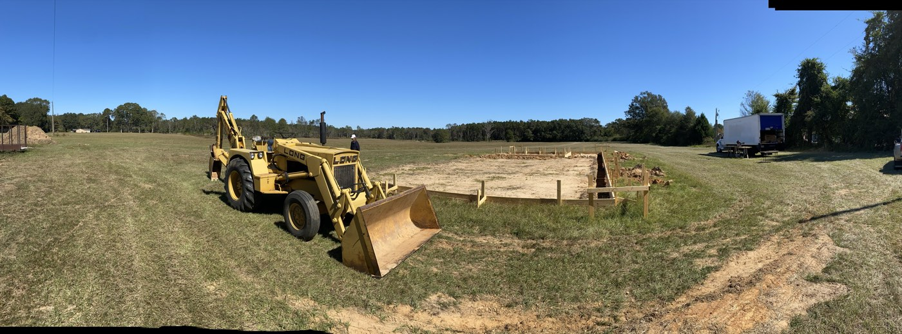
          <div class="pond-stage__hint"><span id="pond-count">Tap the water</span></div>
        </div>
      </div>

      <div class="vid-row">
        <figure class="vid vid--landscape">
          <div class="vid__frame">
            <video src="video/pond-winter.mp4" poster="video/pond-winter.jpg" muted loop playsinline preload="metadata" aria-label="Slow pan across the full pond under heavy winter clouds"></video>
            <button type="button" class="vid__sound" aria-pressed="false" aria-label="Turn sound on">Sound</button>
          </div>
          <figcaption>January 2024. The pond fills, and a winter sky sits on it.</figcaption>
        </figure>
        <figure class="vid vid--portrait">
          <div class="vid__frame">
            <video src="video/casting.mp4" poster="video/casting.jpg" muted loop playsinline preload="metadata" aria-label="A man casting from the red clay bank at golden hour"></video>
            <button type="button" class="vid__sound" aria-pressed="false" aria-label="Turn sound on">Sound</button>
          </div>
          <figcaption>October 2024. One cast after another until the light went.</figcaption>
        </figure>
        <figure class="vid vid--portrait">
          <div class="vid__frame">
            <video src="video/bank-family.mp4" poster="video/bank-family.jpg" muted loop playsinline preload="metadata" aria-label="The family standing on the far bank, reflected in the pond"></video>
            <button type="button" class="vid__sound" aria-pressed="false" aria-label="Turn sound on">Sound</button>
          </div>
          <figcaption>March 2024. Everybody on the far bank, and everybody in the water too.</figcaption>
        </figure>
        <div class="prose">
          <p>Nobody schedules the trips to the bank. Somebody says <em>let&rsquo;s go check the pond</em> and the whole group ends up standing at the edge of the clay, reflected in the water.</p>
        </div>
      </div>

      <div class="pond-grid">
        <figure>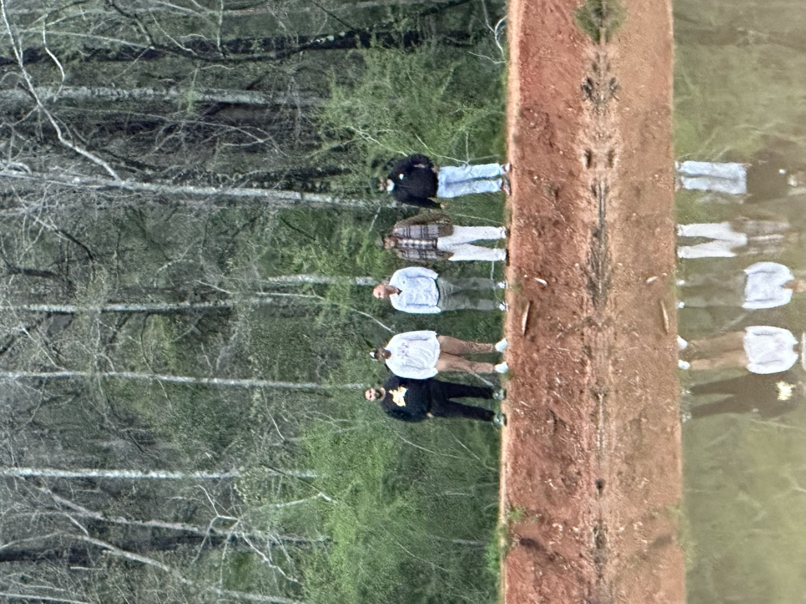<figcaption>March 2024. The whole line of them, and the reflection.</figcaption></figure>
        <figure>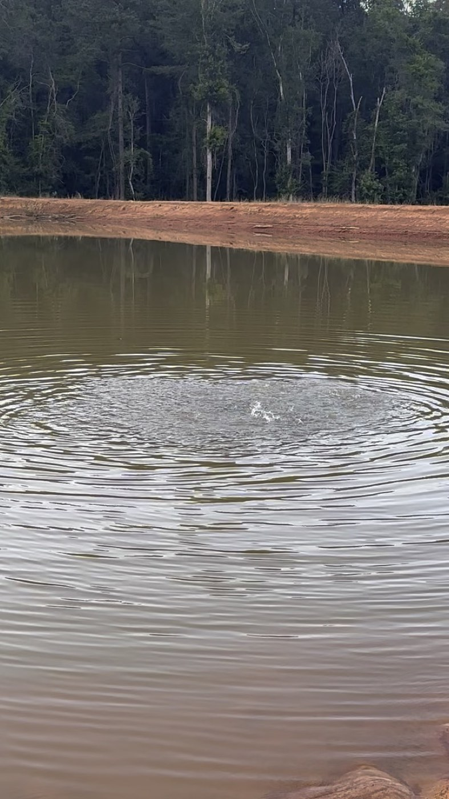<figcaption>Feeding time. One came up.</figcaption></figure>
        <figure>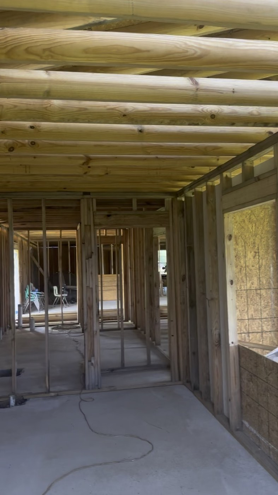<figcaption>Golden hour, one line in the water.</figcaption></figure>
        <figure>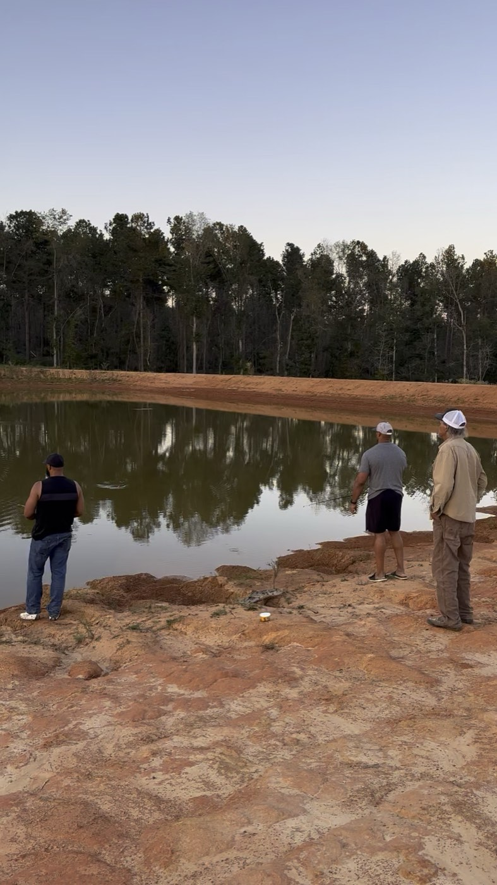<figcaption>Three rods, last light.</figcaption></figure>
      </div>
    </div>
  </section>

  <!-- ============ THE HOUSE ============ -->
  <section class="chapter" id="house">
    <div class="wrap">
      <div class="chapter__head">
        <p class="eyebrow">Chapter three</p>
        <h2>The House</h2>
        <p class="lede">From stakes in the dirt to rooms with walls. Dates come from the photos and videos themselves.</p>
      </div>

      <div class="timeline">
        <article class="tl">
          <div class="tl__date">Jul 2022<small>Before the house</small></div>
          <div><h3>The backhoe was already running</h3><p>Before a single stake went in the field, the old backhoe was working and a wall was coming down. The plan had a head start.</p></div>
          <div class="tl__pair"><figure class="vid vid--portrait">
          <div class="vid__frame">
            <video src="video/backhoe.mp4" poster="video/backhoe.jpg" muted loop playsinline preload="metadata" aria-label="The yellow backhoe digging, seen from the tractor cab"></video>
            <button type="button" class="vid__sound" aria-pressed="false" aria-label="Turn sound on">Sound</button>
          </div>
          <figcaption>July 2022. From the tractor seat.</figcaption>
        </figure><figure class="vid vid--portrait">
          <div class="vid__frame">
            <video src="video/remodel.mp4" poster="video/remodel.jpg" muted loop playsinline preload="metadata" aria-label="An older man in a white cap watching a younger man cut into a wall"></video>
            <button type="button" class="vid__sound" aria-pressed="false" aria-label="Turn sound on">Sound</button>
          </div>
          <figcaption>July 2022. Two generations at one wall.</figcaption>
        </figure></div>
        </article>
        <article class="tl">
          <div class="tl__date">Oct 2022<small>Breaking ground</small></div>
          <div><h3>Forms staked out</h3><p>Batter boards and string in the middle of the field. Nothing but a rectangle of bare dirt, the tree line, and a very blue sky.</p></div>
          <figure class="vid vid--landscape">
          <div class="vid__frame">
            <video src="video/groundbreaking.mp4" poster="video/groundbreaking.jpg" muted loop playsinline preload="metadata" aria-label="Slow pan across the staked foundation forms in the open field"></video>
            <button type="button" class="vid__sound" aria-pressed="false" aria-label="Turn sound on">Sound</button>
          </div>
          <figcaption>October 2022. Walking the staked-out foundation, backhoe in the background.</figcaption>
        </figure>
        </article>
        <article class="tl">
          <div class="tl__date">Oct 2022<small>Dirt work</small></div>
          <div><h3>Footings dug</h3><p>Clay piled up in mounds, and the whole layout visible from the tractor seat.</p></div>
          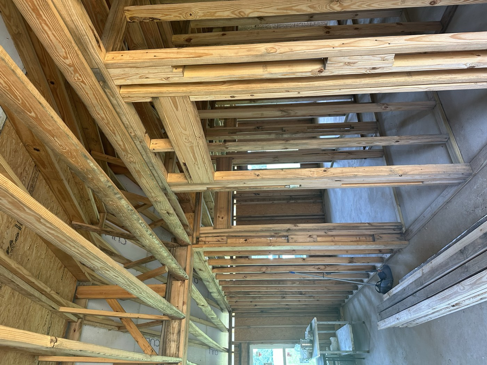
        </article>
        <article class="tl">
          <div class="tl__date">Apr 2023<small>Walls up</small></div>
          <div><h3>Everybody in the frame</h3><p>The day the walls stood. The family lined up between the studs for the picture, kids included, before the roof was even a thought.</p></div>
          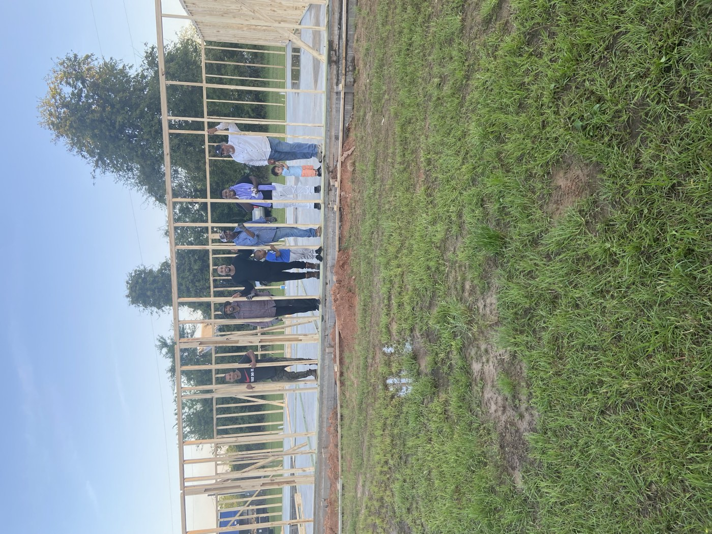
        </article>
        <article class="tl">
          <div class="tl__date">Jul 2023<small>Roof deck</small></div>
          <div><h3>Decked in</h3><p>Sheathing and underlayment on the roof, the one summer the field got cut and baled. The view from up top is most of the property.</p></div>
          <figure class="vid vid--landscape">
          <div class="vid__frame">
            <video src="video/roofdeck.mp4" poster="video/roofdeck.jpg" muted loop playsinline preload="metadata" aria-label="Pan from the roof across the freshly baled hayfield"></video>
            <button type="button" class="vid__sound" aria-pressed="false" aria-label="Turn sound on">Sound</button>
          </div>
          <figcaption>July 2023. From the roof deck: the truck, the field, the tree line.</figcaption>
        </figure>
        </article>
        <article class="tl">
          <div class="tl__date">Nov 2023<small>Wrapped</small></div>
          <div><h3>Dried in</h3><p>House wrap on, windows set, trusses overhead. Inside, a box fan and a school chair, which is all a break room needs.</p></div>
          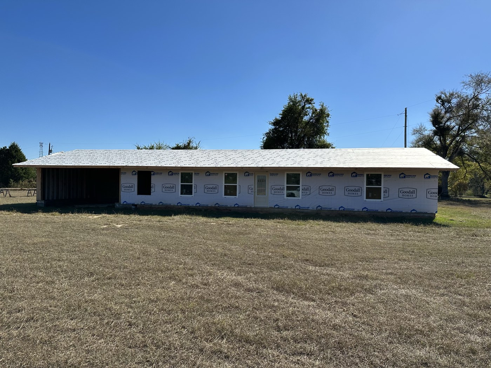
        </article>
        <article class="tl">
          <div class="tl__date">May 2024<small>Framing</small></div>
          <div><h3>Walking the rooms</h3><p>Every room is a rectangle of studs and light. You can already tell which window is the kitchen.</p></div>
          <figure class="vid vid--portrait">
          <div class="vid__frame">
            <video src="video/framing-walk.mp4" poster="video/framing-walk.jpg" muted loop playsinline preload="metadata" aria-label="Walkthrough of the framed interior, studs and trusses"></video>
            <button type="button" class="vid__sound" aria-pressed="false" aria-label="Turn sound on">Sound</button>
          </div>
          <figcaption>May 2024. Down the hall and through the rooms.</figcaption>
        </figure>
        </article>
        <article class="tl">
          <div class="tl__date">Oct 2024<small>Shingles</small></div>
          <div><h3>Roof goes on</h3><p>Bundles hauled up, nail gun running, two men on the deck in the October sun.</p></div>
          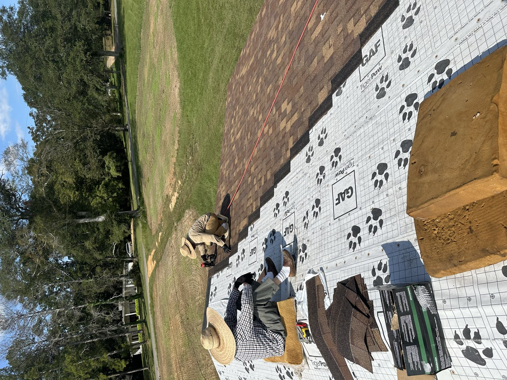
        </article>
        <article class="tl">
          <div class="tl__date">Jul 2025<small>Fence line</small></div>
          <div><h3>Posts in the ground</h3><p>A line of fence posts set with a mixer under the oak. This is the edge of the next homesites, marked out the way Eldridge laid them out.</p></div>
          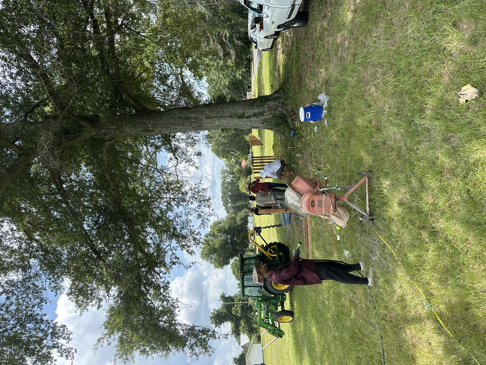
        </article>
        <article class="tl tl--now">
          <div class="tl__date">Aug 2026<small>Drywall</small></div>
          <div><h3>Walls inside the walls</h3><p>Sheetrock hung, ceilings closed, a light on in the hall. For the first time it looks like rooms instead of framing.</p></div>
          <figure class="vid vid--portrait">
          <div class="vid__frame">
            <video src="video/drywall.mp4" poster="video/drywall.jpg" muted loop playsinline preload="metadata" aria-label="Interior with drywall hung on walls and ceiling, workers in the hall"></video>
            <button type="button" class="vid__sound" aria-pressed="false" aria-label="Turn sound on">Sound</button>
          </div>
          <figcaption>August 2026. Drywall going up, room by room.</figcaption>
        </figure>
        </article>
      </div>

      <div class="compare" id="compare">
        <div class="compare__frame">
          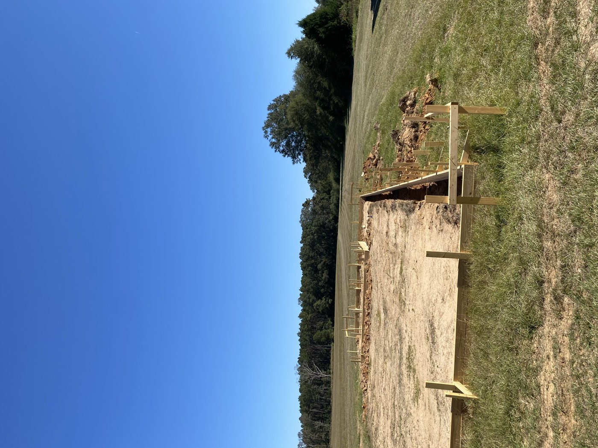
          
          <div class="compare__handle" aria-hidden="true"></div>
          <div class="compare__tags" aria-hidden="true"><span>Oct 2022</span><span>Nov 2023</span></div>
        </div>
        <input type="range" id="compare-range" min="0" max="100" value="50" aria-label="Drag to compare the staked foundation with the wrapped house">
      </div>
      <p class="cap" style="margin-top:12px">Drag across the picture. Thirteen months, same field.</p>

      <div class="strip">
        <figure>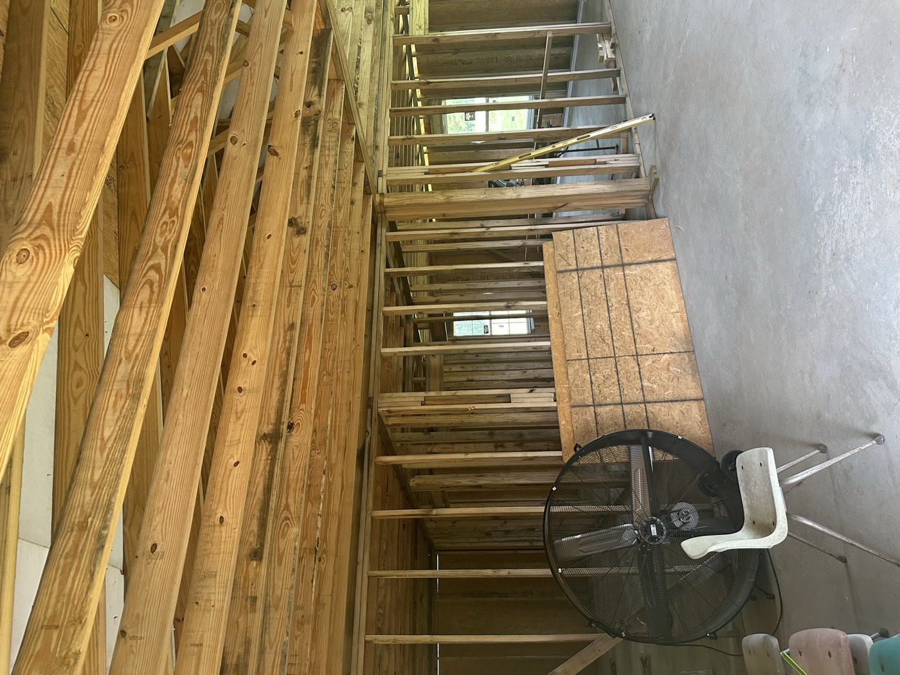<figcaption>Trusses and stud walls, May 2024.</figcaption></figure>
        <figure>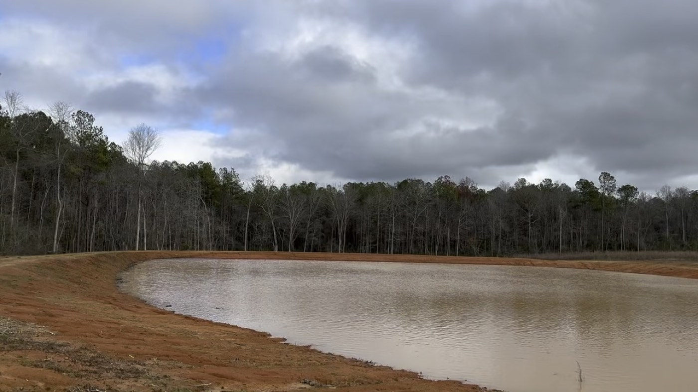<figcaption>The hall, before drywall.</figcaption></figure>
        <figure>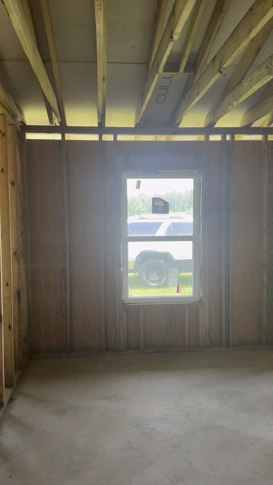<figcaption>One window, one truck, one field.</figcaption></figure>
      </div>
    </div>
  </section>

  <!-- ============ THE HANDS ============ -->
  <section class="chapter chapter--lumber" id="hands">
    <div class="wrap">
      <div class="chapter__head">
        <p class="eyebrow">Chapter four</p>
        <h2>The Hands</h2>
        <p class="lede">No crew was hired for this. The people in these pictures are family, and every wall went up in their hands.</p>
      </div>
      <div class="hands">
        <figure class="span-4">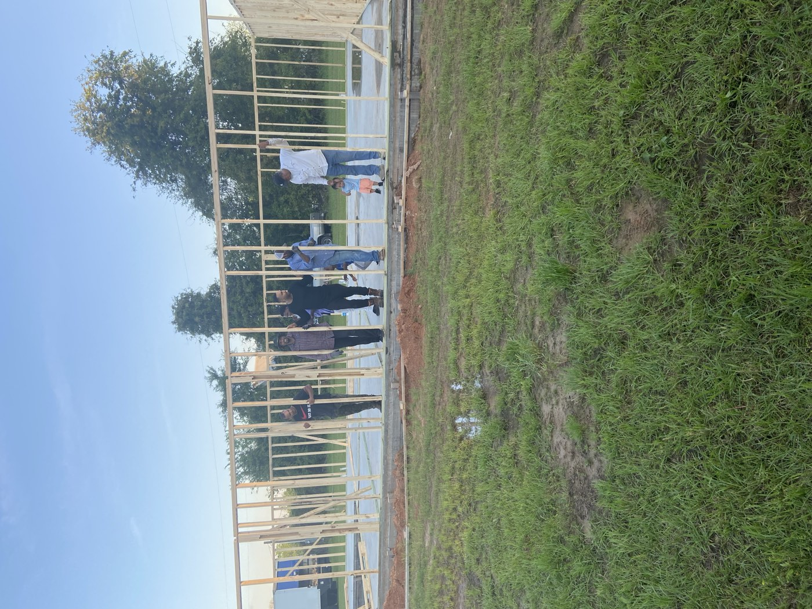<figcaption>Walls-up day, April 2023.</figcaption></figure>
        <figure class="span-2 tall">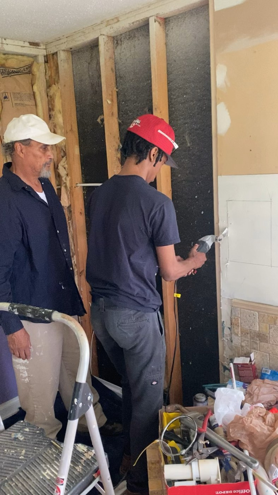<figcaption>Two generations, one wall.</figcaption></figure>
        <figure class="span-2 tall">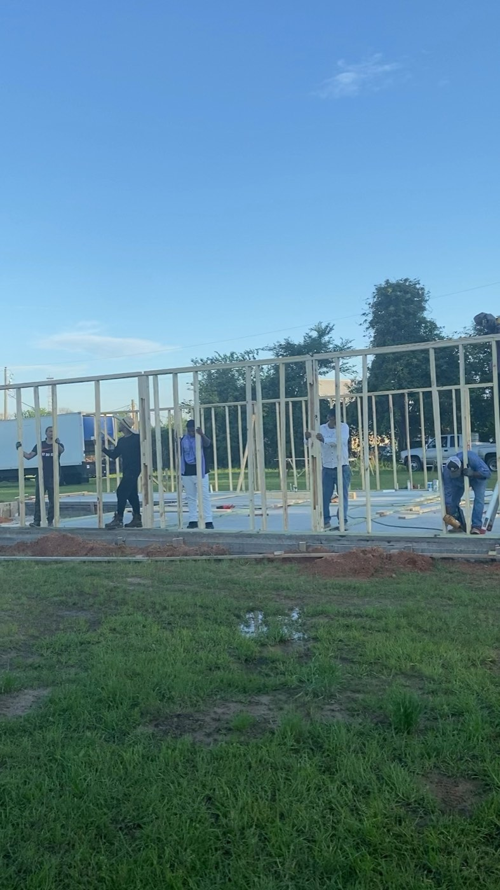<figcaption>Standing a wall by hand.</figcaption></figure>
        <figure class="span-2">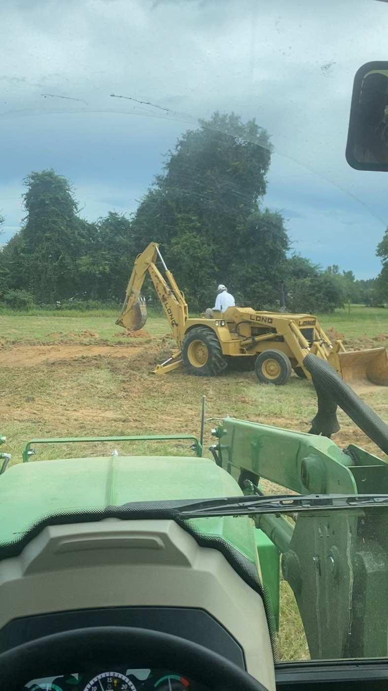<figcaption>From the tractor seat.</figcaption></figure>
        <figure class="span-2">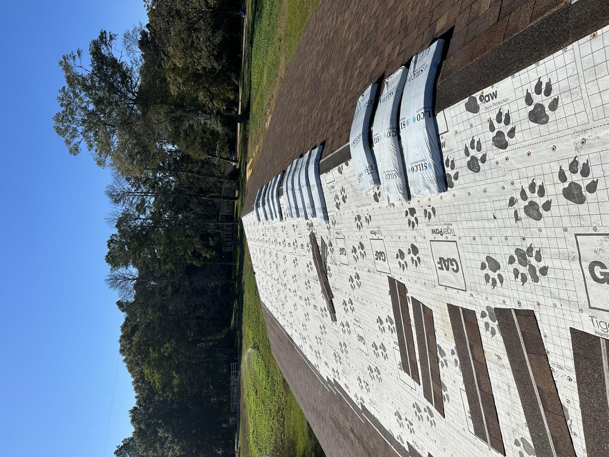<figcaption>Bundles staged on the deck.</figcaption></figure>
        <figure class="span-3">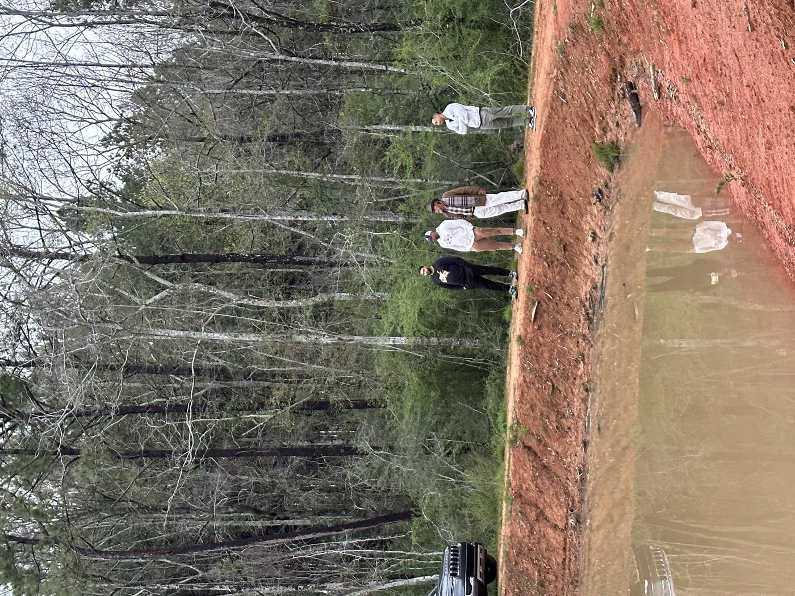<figcaption>Checking the water level, March 2024.</figcaption></figure>
        <figure class="span-3">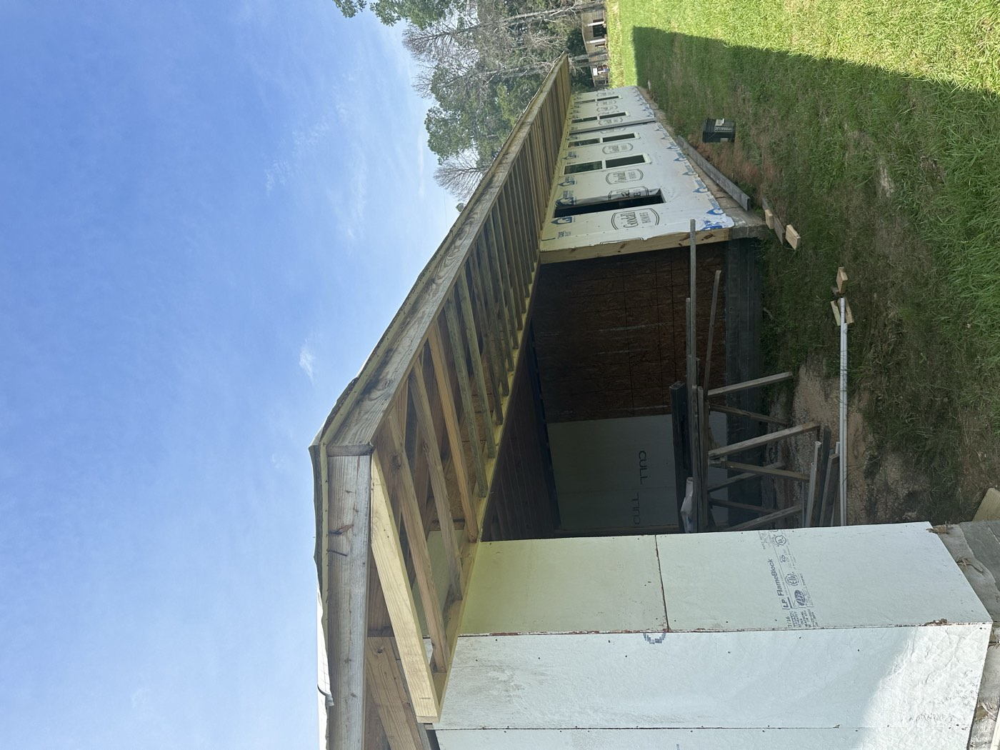<figcaption>The porch, framed.</figcaption></figure>
      </div>
      <div class="hands-text">
        <div class="prose">
          <p class="lede">Weekends, holidays, and the days off nobody could really spare.</p>
        </div>
        <div class="prose">
          <p>The slab got poured, the walls got stood, the roof got shingled, and the fence posts got set by fathers, sons, uncles, cousins, and a couple of kids who mostly carried water. That was the point. Eldridge didn&rsquo;t want to hire this out. He wanted it built <em>by</em> his own people, so that whoever buys a house out here is buying something the family put up with its own hands.</p>
          <p>Every picture on this page was taken by somebody who was also holding a tool that day. <a href="gallery.html">All of the photos and videos are in the gallery.</a></p>
        </div>
      </div>
    </div>
  </section>

  <!-- ============ ELDRIDGE ============ -->
  <section class="chapter chapter--pine" id="eldridge">
    <div class="wrap">
      <div class="chapter__head">
        <p class="eyebrow">Chapter five &middot; Eldridge Lee Thurman</p>
        <h2>Eldridge</h2>
      </div>
      <div class="eld">
        <figure>
          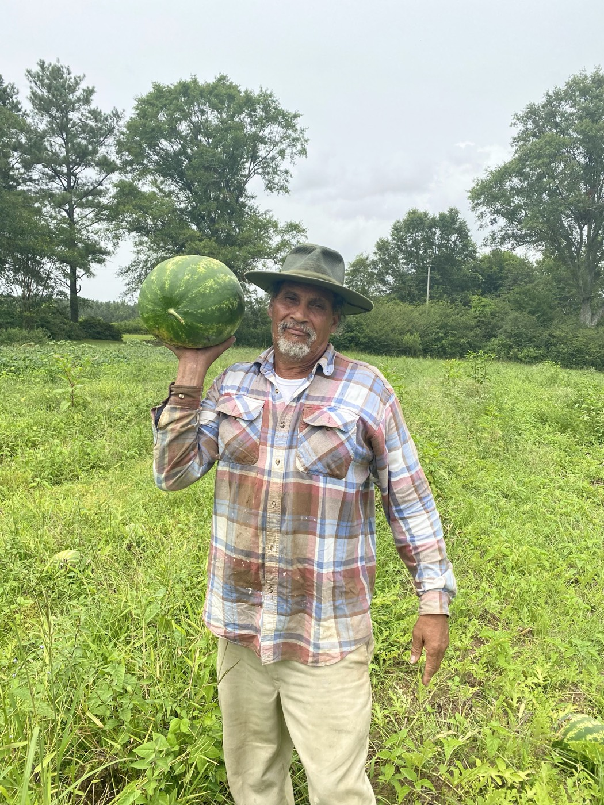
          <figcaption>Eldridge Thurman. In the field, watermelon on his shoulder, the way most people picture him.</figcaption>
        </figure>
        <div>
          <p class="eld__quote">He saw the pond <em>before the pond.</em> He saw the houses <em>before the first nail.</em></p>
          <div class="prose" style="margin-top:32px">
            <p>Eldridge Lee Thurman looked at thirty-three acres of grass and pine outside Magee, Mississippi, and told everybody exactly what was going to happen on it. A pond down at the tree line. A house in the middle. Then more houses across the land, built by the family and sold, each one paying for the next. Work the family could do together, on land that would keep giving back.</p>
            <p>He didn&rsquo;t get to see the last of it. He passed away recently, with the first house dried in and the pond full. But he saw enough to know it was working, and he spent every evening out here doing the one chore he never handed off: a bucket of feed, a walk to the bank, and a few minutes watching the catfish come up.</p>
            <p>To the people reading this he was a husband, a father, a friend, a neighbor. Everybody has their own version of him. This land is the one thing all of those versions had in common.</p>
            <p>Everything on this land is still being built to his drawing, by the people he drew it with. That was always the other half of the plan. Not just what got built, but who built it, side by side, and what that did for the family.</p>
          </div>
          <dl class="left">
            <div><dt>The pond</dt><dd>Dug, filled, stocked, and fed. Still the first stop on every visit.</dd></div>
            <div><dt>The house</dt><dd>His floor plan, his spot in the field, roof on and waiting for the inside.</dd></div>
            <div><dt>The plan</dt><dd>Homesites marked out north of the first house, to be built by the family and sold, one at a time.</dd></div>
            <div><dt>The habit</dt><dd>Show up. Bring the kids. Feed the fish before you leave.</dd></div>
          </dl>
        </div>
      </div>
    </div>
  </section>

  <!-- ============ WHAT'S NEXT ============ -->
  <section class="chapter" id="next">
    <div class="wrap">
      <div class="chapter__head">
        <p class="eyebrow">Chapter six</p>
        <h2>Still Building</h2>
        <p class="lede">Where the work stands, and what comes after.</p>
      </div>
      <div class="next">
        <ul class="plan">
          <li><span class="mark done" aria-hidden="true"></span><div><h3>The pond</h3><p>Finished and stocked. Needs nothing but feeding.</p></div></li>
          <li><span class="mark done" aria-hidden="true"></span><div><h3>House one, outside</h3><p>Slab, walls, trusses, wrap, windows, and shingles are done.</p></div></li>
          <li><span class="mark now" aria-hidden="true"></span><div><h3>House one, inside</h3><p>Drywall went up in August 2026. Paint, floors, and finish work are what&rsquo;s left before it&rsquo;s finished.</p></div></li>
          <li><span class="mark now" aria-hidden="true"></span><div><h3>The fence line</h3><p>Posts set in summer 2025. Wire and gates to follow.</p></div></li>
          <li><span class="mark" aria-hidden="true"></span><div><h3>The homes to come</h3><p>Sites marked north and west of the first house, built the same way the first one was, by family on weekends, then sold to the people who&rsquo;ll live out here.</p></div></li>
        </ul>
        <figure>
          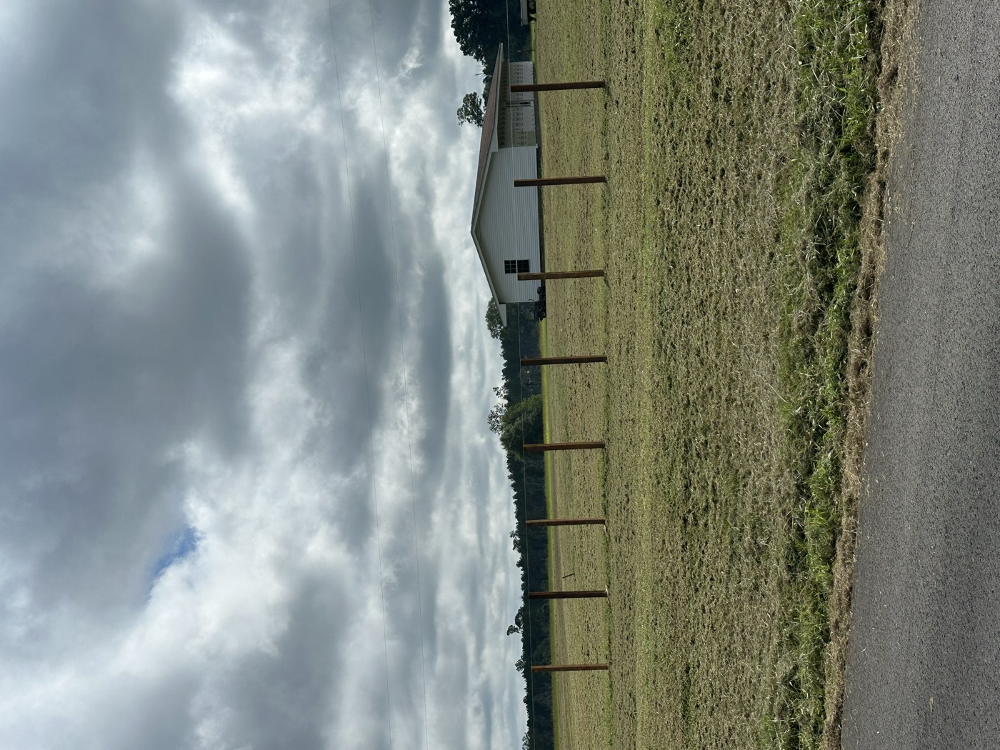
          <figcaption>July 2025. The line the next homes will follow.</figcaption>
        </figure>
      </div>
    </div>
  </section>

  <!-- ============ MEMORIES ============ -->
  <section class="chapter chapter--lumber" id="memories">
    <div class="wrap">
      <div class="chapter__head">
        <p class="eyebrow">For the family</p>
        <h2>Memories of Eldridge</h2>
        <p class="lede">A story, a saying, a day on the bank. Write it down here so it doesn&rsquo;t get lost.</p>
      </div>
      <div class="mem">
        <form class="form" id="mem-form" novalidate>
          <label for="mem-name">Your name<input type="text" id="mem-name" name="mem-name" autocomplete="name" placeholder="Xavier"></label>
          <label for="mem-text">The memory<textarea id="mem-text" name="mem-text" placeholder="The first time he handed me the feed bucket&hellip;"></textarea></label>
          <div class="row">
            <button type="submit" class="btn">Add to the wall</button>
            <button type="button" class="btn btn--ghost" id="mem-copy">Copy to share</button>
          </div>
          <p class="status" id="mem-status" aria-live="polite"></p>
          <p class="note">Memories you add here are saved in this browser only. To put one on the wall for everybody, copy it and send it to whoever keeps the site, and they&rsquo;ll add it in.</p>
        </form>
        <div class="wall" id="wall">
          <article class="card card--prompt">
            <p class="eyebrow">Start here</p>
            <p class="q">What did he say the first time you caught something out of that pond?</p>
          </article>
          <article class="card card--prompt">
            <p class="eyebrow">Or here</p>
            <p class="q">Which piece of the plan did he talk about most, and how did he describe it?</p>
          </article>
          <article class="card card--prompt">
            <p class="eyebrow">Or this</p>
            <p class="q">What&rsquo;s one thing he did out here every single time, without fail?</p>
          </article>
          <article class="card card--prompt">
            <p class="eyebrow">Or this</p>
            <p class="q">What do you want the people who end up living on this land to know about him?</p>
          </article>
        </div>
      </div>
    </div>
  </section>

</main>

<footer class="footer">
  <div class="wrap">
    <p class="big">For Eldridge.<br><span>From all of us.</span></p>
    <p class="cap">In memory of Eldridge Lee Thurman &middot; The Thurman Place, Magee, Mississippi &middot; Ground broken October 2022, and still going.</p>
  </div>
</footer>

<script src="script.js"></script>
